Images of the Russian Empire
Project 1 · Ariq Koh · CS180, Fall 2026 · colorizing the Prokudin-Gorskii glass plates
1. Approach 2. Single-scale alignment 3. Multi-scale pyramid results 4. Custom images 5. Bells & whistles 6. Failure cases
1 Approach
Between 1909 and 1915, Sergei Prokudin-Gorskii photographed the Russian Empire in color decades before color film existed, by taking three exposures of the same scene in quick succession through red, green and blue filters. The three exposures were never merged. They survive as a single glass plate negative with the blue-filtered exposure on top, green in the middle, and red on the bottom. To recover the color photo, I split each plate into thirds and align the green and red thirds onto the blue one by translation.
Scoring alignment. For a candidate shift, I score it with the L2
norm (Euclidean distance, the square root of the sum of squared
pixel differences) between the shifted channel and the reference channel,
where smaller is better. I score only a center crop of the image (half
the width and height, centered), and apply the candidate shift by
indexing directly into the array rather than np.roll-ing it.
This means a shift is never scored against pixels that wrapped around
from the opposite edge, and the plate's border and frame, which is
often scratched, mismatched between exposures, or simply a different
shape per channel, can never bias the match.
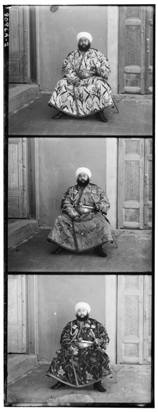
Single-scale search. For the three low-resolution JPEGs, an exhaustive search over a small window (±15px in x and y) around zero is fast enough and wide enough to find the true offset directly.
Multi-scale pyramid. The full-resolution scans are too large
(roughly 3500×9600px per channel) for an exhaustive ±15px
search to reliably cover the true offset, which can be much larger at
full resolution. Instead I build an image pyramid: repeatedly downscale
both channels by half until the smaller dimension drops under a
min_size threshold, exhaustively search a small window
(±4px) at that coarse scale, then walk back up the pyramid,
doubling the shift estimate at each level and refining it with another
small ±4px search. This keeps the search cheap at every scale
while still covering a wide range of true offsets, since the doubling
compounds across levels.
2 Single-scale alignment
Results of the single-scale, raw-pixel L2 search (±15px window) on the three low-resolution JPEGs.
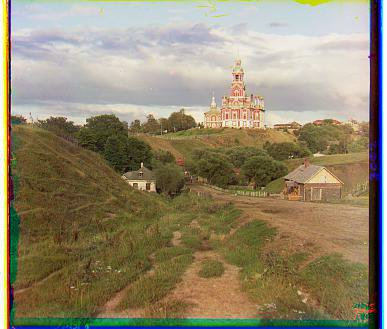
G (5, 2) · R (12, 3)
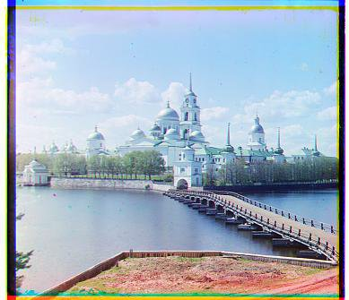
G (-3, 2) · R (3, 2)
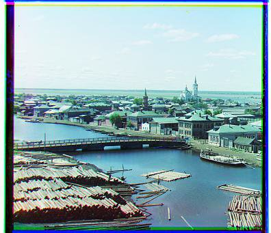
G (3, 3) · R (7, 3)
| Image | G offset (x, y) | R offset (x, y) | Time |
|---|---|---|---|
| Cathedral | (5, 2) | (12, 3) | 0.11s |
| Monastery | (-3, 2) | (3, 2) | 0.07s |
| Tobolsk | (3, 3) | (7, 3) | 0.07s |
3 Multi-scale pyramid results
Results of the multi-scale pyramid alignment, with the L2 norm computed directly on raw RGB pixel values (as required), on all 14 provided example plates. All 14 use the exact same procedure and parameters, with nothing tuned per image. One of the 14 (emir) comes out visibly misaligned with this metric. See Section 5 for why, and for the fix.
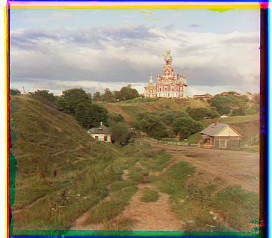
G (5, 2) · R (12, 4)
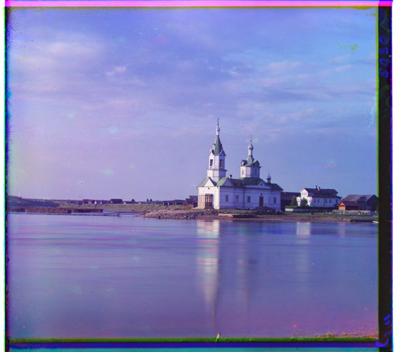
G (25, 4) · R (58, -4)
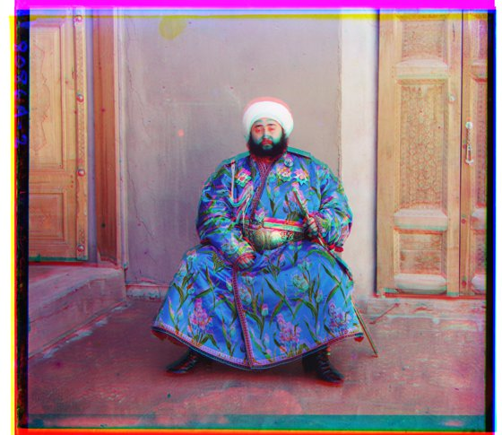
G (48, 24) · R (71, 39) (misaligned, see Section 5)
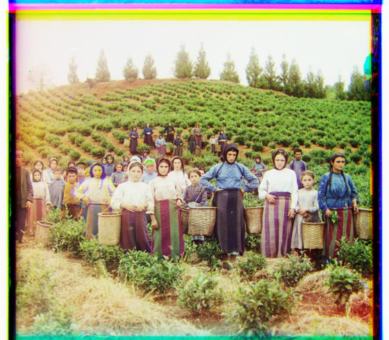
G (59, 17) · R (123, 14)
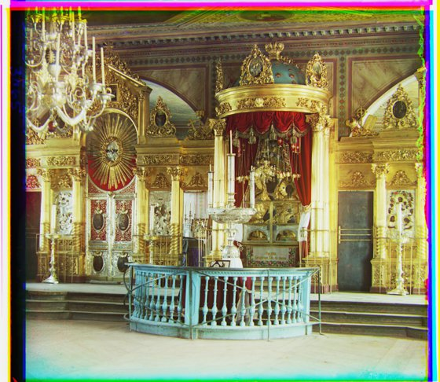
G (41, 17) · R (89, 23)
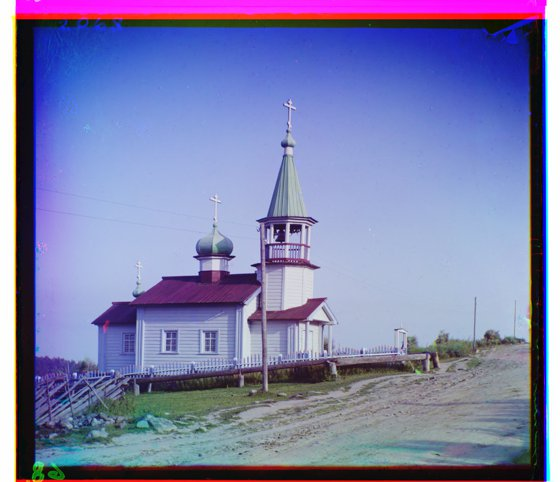
G (40, 7) · R (131, 11)
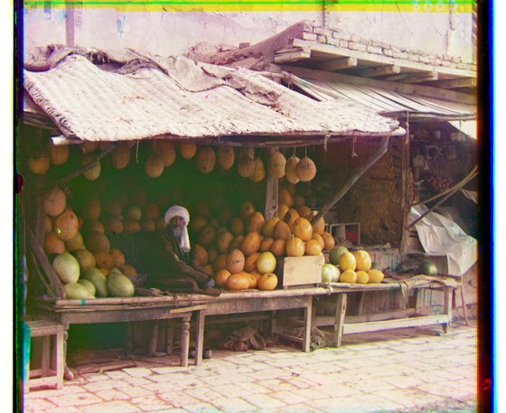
G (81, 10) · R (178, 14)

G (-3, 2) · R (3, 2)
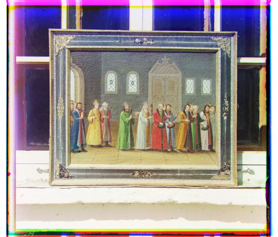
G (29, 3) · R (69, 7)
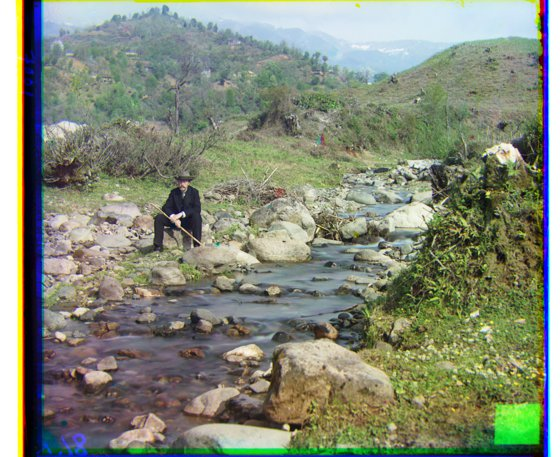
G (78, 29) · R (175, 37)
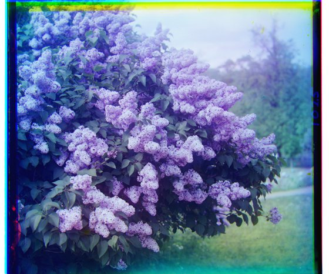
G (50, -5) · R (97, -24)
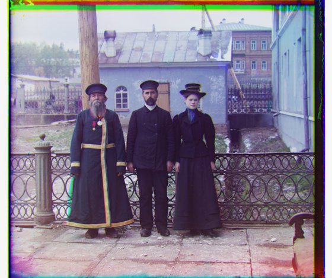
G (52, 14) · R (111, 12)

G (3, 3) · R (7, 3)
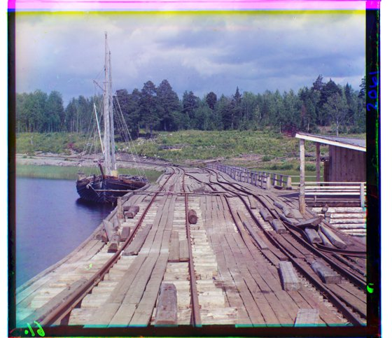
G (15, -6) · R (82, -15)
| Image | G offset (x, y) | R offset (x, y) | Time |
|---|---|---|---|
| Cathedral | (5, 2) | (12, 4) | 0.2s |
| Church | (25, 4) | (58, -4) | 2.0s |
| Emir of Bukhara | (48, 24) | (71, 39) | 2.0s |
| Harvesters | (59, 17) | (123, 14) | 1.9s |
| Icon | (41, 17) | (89, 23) | 2.0s |
| Ilemselga | (40, 7) | (131, 11) | 2.0s |
| Melons | (81, 10) | (178, 14) | 2.0s |
| Monastery | (-3, 2) | (3, 2) | 0.0s |
| Religious Painting | (29, 3) | (69, 7) | 1.9s |
| Self Portrait | (78, 29) | (175, 37) | 2.0s |
| Siren (Lilacs) | (50, -5) | (97, -24) | 2.0s |
| Three Generations | (52, 14) | (111, 12) | 2.1s |
| Tobolsk | (3, 3) | (7, 3) | 0.0s |
| Wharf | (15, -6) | (82, -15) | 2.0s |
4 Custom images
The same procedure (multi-scale pyramid, L2 on raw RGB pixels) applied to 3 more plates I downloaded from the Library of Congress Prokudin-Gorskii collection. All 3 align correctly with this metric.
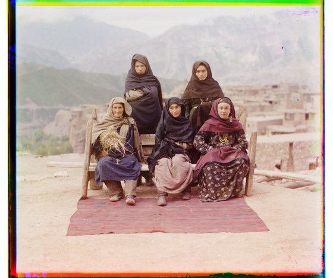
G (16, 1) · R (103, -1)
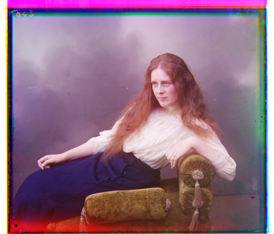
G (55, 8) · R (114, 12)
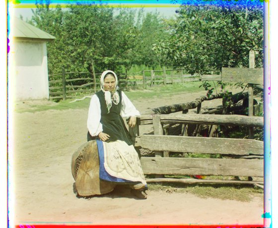
G (26, 3) · R (120, 4)
| Image | G offset (x, y) | R offset (x, y) | Time |
|---|---|---|---|
| Types of Dagestan | (16, 1) | (103, -1) | 2.0s |
| Study of a Head | (55, 8) | (114, 12) | 2.3s |
| In Malorossiya | (26, 3) | (120, 4) | 1.9s |
5 Bells & whistles: better features
The required baseline metric is L2/SSD computed directly on raw RGB pixel values, shown in Section 3 and Section 4 above. On 16 of the 17 plates (all 3 custom ones included) this already works fine. But on emir, raw-pixel L2 converges to a confidently wrong answer. The problem isn't the search window being too narrow (I verified a wider window finds the exact same wrong optimum), but that the metric itself prefers the wrong shift: the tiled stonework around the doorway repeats often enough that a few wrong offsets line it up just as well as the correct one, once pixel intensities are compared directly.
The fix: score alignment on each channel's Sobel gradient magnitude instead of its raw pixel values (still with L2/SSD as the metric, just on a different feature). Edges are far more distinctive than flat regions and largely invariant to the brightness differences between color channels, which fixes the failure without regressing any of the other 16 images.
Emir of Bukhara: before and after
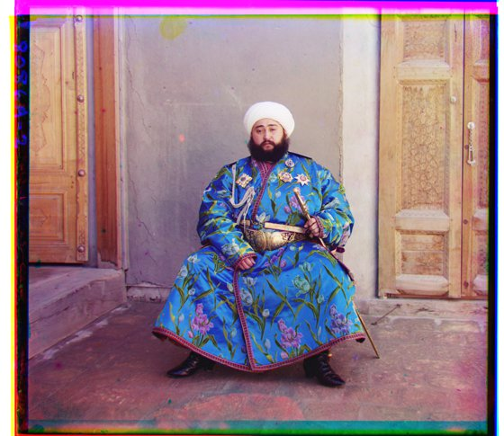
6 Failure cases
With the required baseline (multi-scale pyramid, L2 on raw RGB pixels, Sections 3 and 4), 1 of the 17 images, emir, comes out visibly misaligned (all 3 custom images and the other 13 provided ones align correctly). The search itself isn't the problem (a wider window converges to the exact same wrong answer). Raw pixel intensities just aren't a distinctive enough signal on this plate: the repeating tiled pattern around the doorway lines up just as well at the wrong offset as at the correct one. See Section 5 for the fix (gradient features), which brings it back into alignment. 0/17 fail with the full pipeline.